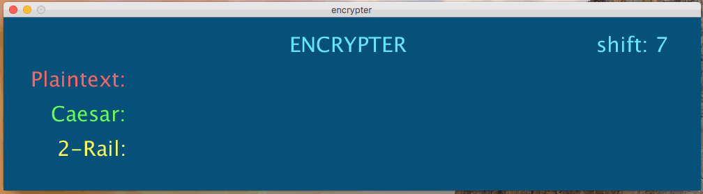
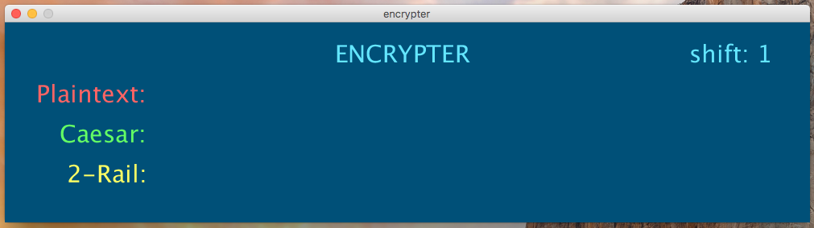

In class, we’ve talked about Caesar ciphers and rail ciphers.
In this assignment, you’ll write a program that programmatically encrypts messages using a caesar cipher and a 2-rail cipher.
Name your program encrypter.pde.
As you type in a plaintex message, your program will immediately translate the text.
Below is an example of the program running with several inputs:

Notice a few things:
You might want to review the lecture slides before starting on this.
Recall that we talked about Caesar ciphers in class. If you don’t understand how a Caesar cipher woks, refer to the lecture slides on Cryptography.
I recommend that you create a string variable that has the entire alphabet in it to help with the encryption.
For example, String alph = "abcdefghijklmnopqrstuvwxyz";.
The next step will be to write a for-loop that loops through all of the characters in the input string that the user types (we did this in class, remember?).
For each character, find the index of this character in the alph variable, and then fond the appropriate caesar cipher offset.
You only need to do a 2-rail cipher encryption. 2-rail cipher encryption is actually rather simple. Think about the 2-rail cipher that is needed for the message “bibliographically”.
b b i g a h c l y
i l o r p i a l
In essence, all that needed to be done was to put every-other letter in the message on the different levels of the rail.
When getting this translation happenning in your program, I recommend starting with two variables, one to represent the top rail and the other the bottom. Then, loop through your string, putting the characters at even indexes in the top row string, and the chars at the odd indexes on the bottom rail string. Then, combine the strings!
First, just get the canvas sized correctly, the labels in the right positions, and the colors.

Then, get the user input working (you had to do something similar on the last assignment!)
Once you have all of this set up, work on the encryptions. Start with getting just the Caesar cipher to work. Once done, move on the the 2-rail.
Below is a gif of a long interaction with the program. Three different messages are typed in. Notice that while each message is displaying, I change the shift amount. When the shift amount changes, the Caesar ciphertext changes. The 2-rail ciphertext does not change, because it does not use the shift. These are for your reference. Check that your results match these!
This is due Friday, April 6th, at 5:00pm.
Submit encrypter.pde to the D2L dropbox before this date/time.